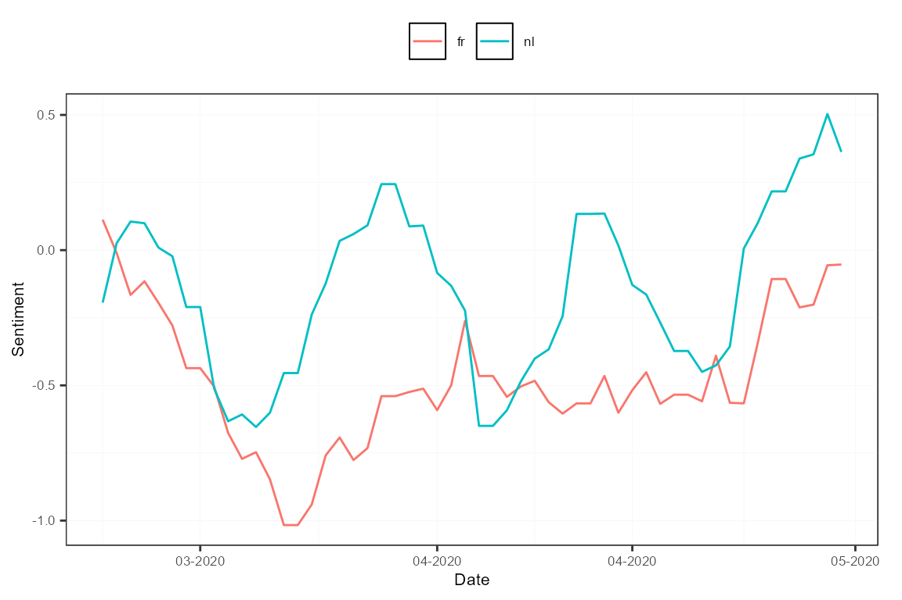

Tutorial contributed by Olivier Delmarcelle (PhD student, Ghent University).
Introduction
Textual analysis has become very popular nowadays as a tool to extract and derive meaningful information from the enormous amounts of content available online.
Newspapers remain one of the primary sources of information. They have been evolving by extending their offerings online, including the setting up of news archives. That makes it possible to perform wide textual analysis on these archives stored online, for instance, to identify trends across years and newspapers.
With the Gopress Academic database, students from various universities in Belgium are able to access news articles from all main Belgian newspapers. These articles are the perfect material for a topic modeling analysis, or textual sentiment computation with the help of the sentometrics package.
This contributed tutorial describes how to use the Gopress Academic database to create a corpus of documents formatted for analysis with sentometrics. You will learn how to:
- Access and retrieve documents from the Gopress Academic database.
- Import the Gopress documents to R and prepare them for a textual analysis.
- Use the
sentometricspackage to analyze the corpus of news.
Obtain data from Gopress
The Gopress Academic platform is available here. You should be able to register with your university e-mail address to gain access to the database.
After signing in, the Search page appears. In the search tool you can specify the time of publication, the newspaper, and the number of words contained in the articles. A least one keyword should always be used as basis for the search. The returned articles appear at the bottom of the page, with a short extract.
Unfortunately, Gopress does not allow downloading in bulk the articles resulting from a search. Instead, one should save articles of interest as “Read Later” by clicking on the star button, as shown below. This should be done for each article of interest.

The saved articles will appear in the “Read Later” section, accessible through the “Read Later” button at the top right of the page. From there, one can download the saved articles in various formats. In this tutorial, we save the articles in RTF format, with one file per article.

Massage the Gopress data in R
Let’s first load all the packages used throughout the tutorial.
library("sentometrics")
library("data.table")
library("quanteda")
library("stringi")
library("stm")
library("lubridate")
library("striprtf")To easily import the data into R, the downloaded articles should be stored in one single folder, preferably containing only the articles. With the help of the striprtf package, the articles can then be imported to R.
folder <- "gopress_downloads/" # the folder's path for the downloaded articles
filelist <- list.files(path = folder, pattern = "*rtf")
filelist <- paste(folder, filelist, sep = "")
rawCorpus <- lapply(filelist, FUN = read_rtf)
str(rawCorpus[10:12])## List of 3
## $ : chr [1:31] "Wilmès moet nu perspectief bieden" "De Morgen* - 24 Apr. 2020 - 1" "* " " " ...
## $ : chr [1:17] "'Bij ons zou al lang een volksopstand zijn uitgebroken'" "De Morgen* - 27 Apr. 2020 - 10" "* " " " ...
## $ : chr [1:31] "Goedkope vliegtickets, even goedkope service" "De Morgen* - 23 Apr. 2020 - 10" "* " " " ...The text and metadata in rawCorpus are presented as lists of paragraphs, which is inappropriate for most textual analysis packages. The subsequent steps serve to create a corpus object in a full-text format. The first thing to do is to extract the dates and the issuing newspapers from the articles.
secpars <- sapply(rawCorpus, "[[", 2) # extract metadata paragraph from all articles
dates <- stri_extract(secpars, regex = "\\d\\d[ ]....[ ]\\d\\d\\d\\d") # extract dates
dates <- as.Date(parse_date_time(dates, "d b y", locale = "English_Belgium.1252")) # reformat dates
sources <- stri_extract(secpars, regex = ".*\\*") # extract newspapers
sources <- stri_replace_all(sources, "", regex = "\\*") # remove asterisks
sources <- stri_replace_all(sources, "_", fixed = "-") # replace "-" with "_"
sources <- iconv(sources, from = "UTF-8", to = "ASCII//TRANSLIT") # remove accentsThe two vectors dates and sources now contain properly formatted dates and issuing newspapers. Note that "-" and accent characters were removed from the newspaper names because the sentometrics package does not like these characters when used as feature names.
It is important to emphasize the role of the locale argument in the date reformatting. This depends on the language of the Gopress website used when downloading the data. We used the English version of the website. For documents downloaded using the Dutch or French version, use "Dutch_Belgium.1252" or "French_Belgium.1252" instead.
table(sources)## sources
## De Morgen De Tijd L'Echo Le Soir Metro FR Metro NL
## 212 388 494 332 6 2The next step is to extract the actual body of the articles, found from the fifth paragraph. The fifth paragraph usually contains a small summary of the article’s content and may or may not be included. The below code removes the first four paragraphs in all articles.
After the content extraction, time for some text cleaning! We limit ourselves here to the minimum (as we trust in the tokenization done later internally by sentometrics), but feel free to adjust the cleaning steps to your liking.
texts <- stri_trans_tolower(texts)
texts <- stri_replace_all(texts, " ", regex = "\\s+") # shorten sequences of spaces
texts <- stri_trim_both(texts)Lastly, our goal is to create a data.table ready to be used within the sentometrics package. The sento_corpus() function takes as argument a data.frame-like object with an "id" column, a "texts" column, a "date" column, an optional "language" column, and a number of optional numeric columns representing features of the corpus. Therefore, the initiated one-dimensional column "source" needs to be transformed to a number of numeric columns.
corpus <- data.table(id = 1:length(dates), date = dates, texts = texts, source = sources, value = 1)
corpus <- dcast(corpus, id + date + texts ~ source, fill = 0) # one column per source
corpus <- corpus[order(date)] # order the corpus by dateAs the corpus contains newspapers written in Dutch and in French, we also add a "language" identifier, which allows to analyze articles in different languages independently.
lng <- ifelse(rowSums(corpus[, c("L'Echo", "Le Soir", "Metro FR")]) == 1, "fr", "nl")
corpus[, language := lng]
str(corpus, give.attr = FALSE)## Classes 'data.table' and 'data.frame': 1434 obs. of 10 variables:
## $ id : int 115 161 619 849 926 40 106 141 228 244 ...
## $ date : Date, format: "2020-03-02" "2020-03-02" ...
## $ texts : chr "de politieke actualiteit volgens ugent-politicoloog en de morgen-columnist carl devos. er zijn veel redenen waa"| __truncated__ "het rondrazende coronavirus neemt ook grote happen uit de wereldeconomie. bedrijven die thuiszitters vermaken, "| __truncated__ "au cours de l’année écoulée, 10.000 demandes de primes à l’énergie ont été accordées en région bruxelloise. ced"| __truncated__ "après les inondations de 1926 à liège, le chantier du démergement s’est étendu à toutes les zones minières en w"| __truncated__ ...
## $ De Morgen: num 1 1 0 0 0 1 1 1 0 0 ...
## $ De Tijd : num 0 0 0 0 0 0 0 0 1 1 ...
## $ L'Echo : num 0 0 0 0 0 0 0 0 0 0 ...
## $ Le Soir : num 0 0 1 1 1 0 0 0 0 0 ...
## $ Metro FR : num 0 0 0 0 0 0 0 0 0 0 ...
## $ Metro NL : num 0 0 0 0 0 0 0 0 0 0 ...
## $ language : chr "nl" "nl" "fr" "fr" ...The corpus object is now ready to be analyzed!
Corpus analysis with sentometrics
The sentometrics package is a powerful library that allows quickly computing the sentiment of documents within a large corpus. Its sentiment calculation is based on a lexicons approach possibly with valence shifters (to correct for bigrams such as ‘not good’). The package also specializes in the creation and analysis of textual sentiment time series.
Let’s start using sentometrics by creating a sento_corpus object, the typical ice breaker.
sentoCorpus <- sento_corpus(corpus)
sentoCorpus## A multi-language sento_corpus consisting of 1,434 documents and 8 docvars.To have a quick understanding of what is inside your corpus, you can call corpus_summarize() and then plot one of its outputs.
summ <- corpus_summarize(sentoCorpus, features = c("L'Echo", "Le_Soir", "Metro_FR"))
summ$plots$feature_plotNote how spaces in the feature names were replaced by "_".
The news features can now be used to compute sentiment with the help of the compute_sentiment() function and lexicons plugged in. The sentometrics package has built-in lexicons in English, Dutch and French. The list of available lexicons is accessible through the list_lexicons data object. The lexicons to use in the sentiment computation, considering the language, can be prepared as below.
lexicons <- list(
nl = sento_lexicons(list_lexicons[c("GI_nl_tr", "HENRY_nl_tr", "LM_nl_tr")]),
fr = sento_lexicons(list_lexicons[c("GI_fr_tr", "HENRY_fr_tr", "LM_fr_tr")])
)
head(lexicons$fr$HENRY_fr_tr)## x y
## 1: accomplie 1
## 2: accomplir 1
## 3: affaibli -1
## 4: affaiblir -1
## 5: affaiblissement -1
## 6: affaiblit -1The result of the computation is stored in the object s, which contains for every document the sentiment values for each lexicon applied to each feature, resulting in many sentiment vectors.
s <- compute_sentiment(sentoCorpus, lexicons, how = "counts")
head(s[, 1:5])## id date word_count GI_nl_tr--De_Morgen GI_nl_tr--De_Tijd
## 1: 115 2020-03-02 762 -1 0
## 2: 161 2020-03-02 673 -1 0
## 3: 619 2020-03-02 486 0 0
## 4: 849 2020-03-02 978 0 0
## 5: 926 2020-03-02 523 0 0
## 6: 40 2020-03-03 857 3 0To present the evolution of sentiment over time, we need aggregation across dates. This is done using the aggregate() function, and by specifying beforehand a control object with ctr_agg() to define the aggregation specifics. Here, we aggregate by giving more importance to larger documents and creating a 7-day moving average. The measures object stores the result of the aggregation.
ctr <- ctr_agg(howDocs = "proportional", howTime = "equal_weight", by = "day", lag = 7) # control object
measures <- aggregate(s, ctr) # aggregate the sentiment into a sento_measures object
plot(measures, "features")
To study the sentiment per language, we can redefine the features based on the existing newspaper features, according to the language of the outlet.
measures <- aggregate(measures, features = list("fr" = c("L'Echo", "Le_Soir", "Metro_FR"),
"nl" = c("De_Tijd", "De_Morgen", "Metro_NL")))
plot(measures, "features")
The tools available in sentometrics are complementary to other text mining analyses, such as topic modeling. Let’s have a look at what a topic model produces for the French subset of our corpus. We create a document-feature (also called document-term) matrix using quanteda, and fit a topic model with the stm package.
frenchCorpus <- corpus_subset(sentoCorpus, language == "fr")
dfm <- dfm(frenchCorpus, tolower = TRUE, # create and clean a document-feature matrix
remove_punct = TRUE, remove_numbers = TRUE, remove = stopwords("fr")) %>%
dfm_remove(min_nchar = 3) %>%
dfm_trim(min_termfreq = 0.95, termfreq_type = "quantile") %>%
dfm_trim(max_docfreq = 0.10, docfreq_type = "prop")
dfm <- dfm_subset(dfm, ntoken(dfm) > 0)
topicModel <- stm(dfm, K = 5, verbose = FALSE) # apply a topic model with 5 topics
topTerms <- t(labelTopics(topicModel, n = 10)[["prob"]])
topTerms## [,1] [,2] [,3] [,4] [,5]
## [1,] "wallon" "trump" "bce" "l'ue" "partis"
## [2,] "entreprise" "déconfinement" "bourse" "états" "n-va"
## [3,] "paiement" "chinois" "actions" "etats" "parti"
## [4,] "région" "écoles" "centrales" "l'italie" "social"
## [5,] "l'entreprise" "enfants" "trimestre" "l'allemagne" "chambre"
## [6,] "van" "experts" "ménages" "michel" "parfois"
## [7,] "olivier" "données" "pétrole" "ministres" "l'etat"
## [8,] "ceo" "nord" "dividende" "climat" "confiance"
## [9,] "fédération" "morts" "d'intérêt" "présidente" "spéciaux"
## [10,] "activité" "donald" "brut" "corona" "loi"We can now use the results of this topic model to build new features for our sentoCorpus object. The add_features() function is used with keywords to automatically assign features to documents. The keywords object represents lists of words associated to each topic. Documents receive a score between 0 and 1 based on the frequency of appearance of the keywords for every topic. Notice that we remove the original features at the end.
featuresToRemove <- colnames(docvars(frenchCorpus))[-1] # store the current features to remove
keywords <- lapply(1:ncol(topTerms), function(i) topTerms[, i])
names(keywords) <- paste0("TOPIC_", 1:length(keywords)) # define the feature names
frenchCorpus <- add_features(frenchCorpus, keywords = keywords, do.binary = FALSE, do.regex = FALSE)
docvars(frenchCorpus, featuresToRemove) <- NULL # remove old features
head(docvars(frenchCorpus)) # new features of the corpus## date TOPIC_1 TOPIC_2 TOPIC_3 TOPIC_4 TOPIC_5
## 1 2020-03-02 0.16666667 0.00000000 0.06666667 0.00000000 0.00000000
## 2 2020-03-02 0.27777778 0.02941176 0.00000000 0.00000000 0.05263158
## 3 2020-03-02 0.00000000 0.00000000 0.00000000 0.00000000 0.00000000
## 4 2020-03-03 0.16666667 0.02941176 0.03333333 0.05263158 0.05263158
## 5 2020-03-03 0.05555556 0.00000000 0.00000000 0.00000000 0.00000000
## 6 2020-03-03 0.05555556 0.05882353 0.00000000 0.10526316 0.07894737Finally, we recompute sentiment based on those new features. This will present how sentiment evolved over time with regards to the different topics extracted. We use the sento_measures() function, as it combines compute_sentiment() and aggregate() straight away. We apply the french lexicons only, and use again the ctr object defined earlier.
topicMeasures <- sento_measures(frenchCorpus, lexicons[["fr"]], ctr)
plot(topicMeasures, "features")
This is as far as we will go. We covered some functionalities from sentometrics but there is more to see! Most notably, there is the sento_model() function to fit a sentiment-based high-dimensional regression. It is also possible to use more complex weighting schemes and valence-enhanced lexicons in the sentiment calculation.
You can find more examples and information about the sentometrics package in the Examples section of this website, and in the package’s vignette.
Acknowledgements
Thanks to Eline Vandewalle for writing early versions of some of the code examples, and to Samuel Borms for going over the tutorial. Thanks to the Belga News Agency for maintaining the Gopress database, and to Innoviris for the financial support under the Team Up and Launch programs.